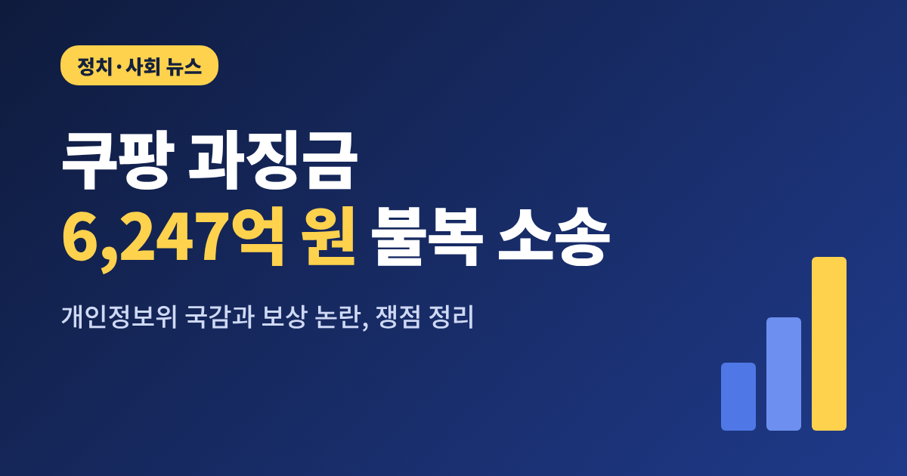
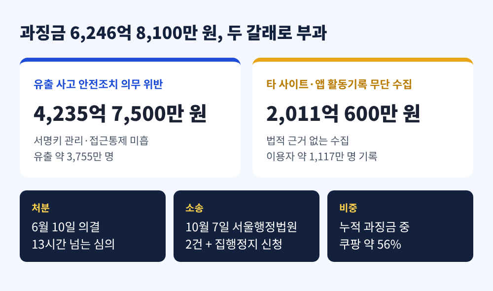
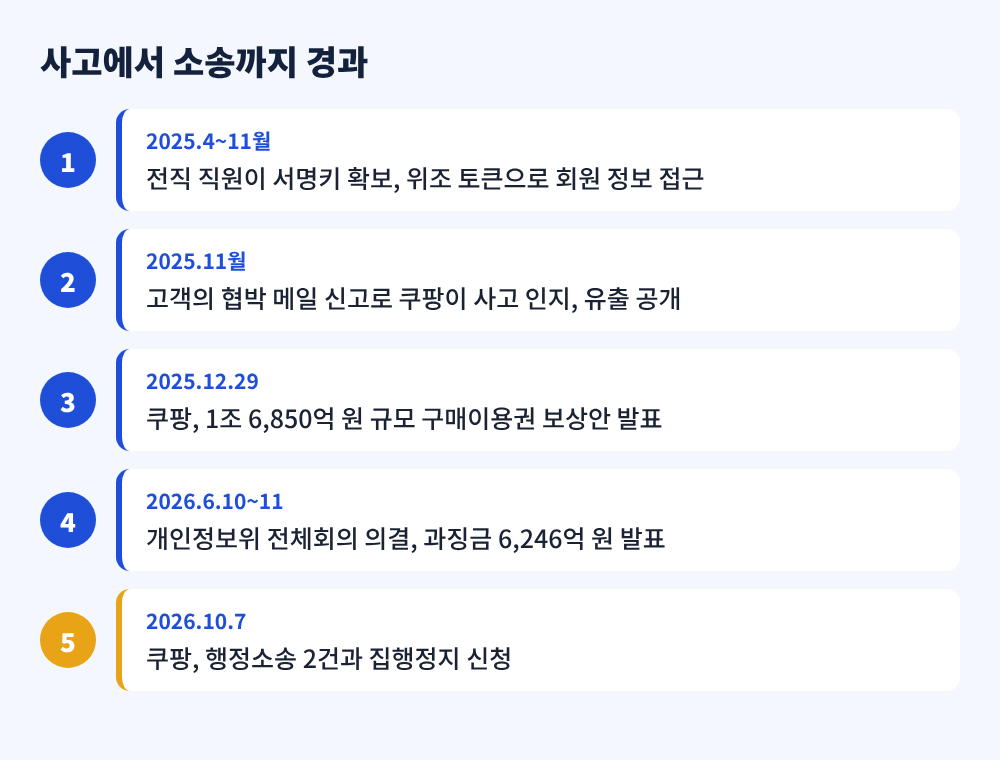
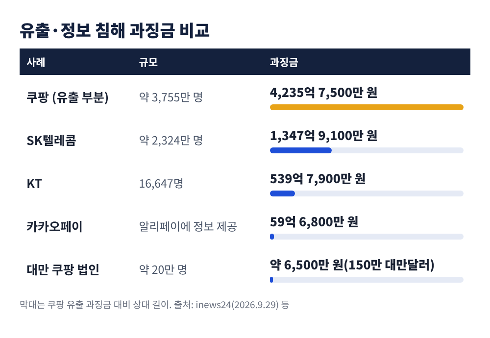
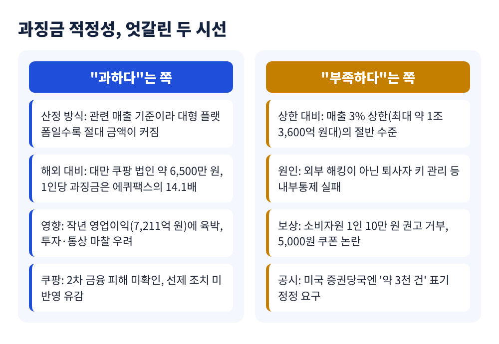
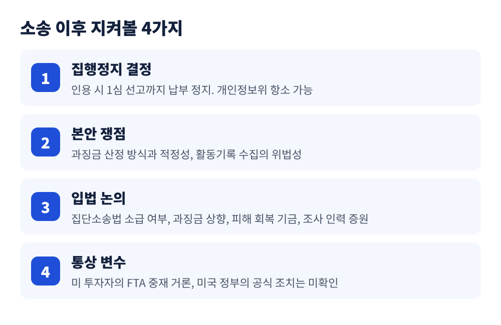

이번 글에서는 쿠팡이 개인정보보호위원회의 과징금에 불복해 소송을 낸 사안을 정리해 보겠습니다. 쿠팡은 10월 7일 서울행정법원에 과징금 취소 소송을 내고 집행정지도 신청했습니다. 같은 주 국정감사에서는 보상과 제재의 실효성을 두고 여야가 모두 쓴소리를 냈습니다. 양측 주장을 나란히 놓고, 앞으로 무엇을 지켜봐야 하는지 짚어 봅니다.
쿠팡은 10월 7일 개인정보보호위원회(개인정보위)를 상대로 행정소송 2건을 냈습니다. 각 소송마다 과징금 효력을 멈춰 달라는 집행정지 신청도 함께 접수했습니다. 보도는 이튿날인 8일에 나왔습니다.
대상은 지난 6월 개인정보위가 의결한 과징금입니다. 6월 10일 전체회의는 13시간 넘게 이어졌고, 결론은 이튿날 발표됐습니다. 금액은 두 갈래입니다.
단일 개인정보 유출 사고에 부과된 과징금으로는 역대 최대입니다. 개인정보위 출범 이후 7월까지 누적 과징금이 약 1조 1,149억 원인데, 쿠팡 한 곳이 약 56%를 차지합니다. 한 기업이 절반을 넘긴 것은 처음입니다.
재판은 서울행정법원 행정4부와 행정1부가 나눠 맡았습니다. 변론기일은 아직 잡히지 않았습니다.

이 소송은 쿠팡만의 문제가 아닙니다. 과징금이 어떻게 계산되고, 보상은 어느 선에서 반영되며, 피해자는 무엇을 돌려받는가를 법원이 판단하는 첫 대형 사례가 될 수 있기 때문입니다.
규모도 큽니다. 개인정보위는 약 3,755만 명(회원 3,322만 명, 비회원 433만 명)의 정보가 유출됐다고 봤습니다. 피해 범위가 회원을 넘어 비회원까지 닿은 대규모 사고입니다.
과징금이 작년 영업이익(7,211억 원)에 육박한다는 점도 무게를 더합니다. 외신은 한미 통상 마찰 가능성까지 언급했습니다. 한국 정부는 개인정보법의 국내 집행일 뿐 통상 조치가 아니라는 입장입니다.
개인정보위가 조사한 경위는 이렇습니다. 쿠팡의 대체 인증 기능을 만든 전직 직원이 서명키를 확보했고, 이를 이용해 위조한 인증 토큰으로 2025년 4월부터 11월까지 회원 정보에 접근했습니다. 쿠팡이 사고를 알게 된 계기는 한 고객의 협박 메일 신고였다고 보도됐습니다.
개인정보위가 꼽은 문제는 크게 세 가지였습니다.
화려한 해킹 기법이 아니라 기본적인 관리 부실이 원인이라는 판단입니다. 개인정보위는 "2차 피해가 없다고 위험이 사라진 것은 아니다"라는 취지로 위반의 중대성을 설명했습니다.

쿠팡은 사과하면서도 선을 그었습니다. 2차 피해를 막으려 한 선제 조치와 사실관계 설명이 처분에 충분히 반영되지 않아 유감이라는 것입니다. 정부 조사에서 2차 금융 피해가 확인되지 않았다는 점도 내세웁니다. 이용자 활동기록 수집 부분에 대해서는 글로벌 기업이 흔히 쓰는 제휴 모델이라는 취지로 적법성을 주장했습니다.
보상 측면에서는 지난해 12월 29일, 1조 6,850억 원 규모의 구매이용권을 발표했습니다. 3,370만 계정에 1인당 약 5만 원어치를 순차 지급하는 방식입니다. 10월 6일 국감에 나온 쿠팡 정보보호책임자는 키 관리 체계 개편, 외부 전문가 자문위원회 구성, 지난해 보안 투자 1,349억 원(전년 대비 51.6% 증가) 등을 설명했습니다.
집행정지가 받아들여지면 납부 의무는 법원이 정한 기간 멈춥니다. 보통은 1심 판결 때까지입니다. 다만 개인정보위가 항소할 수 있어 처분이 확정적으로 사라지는 것은 아닙니다. 참고로 개인정보위 처분서는 2년 안에 최대 6회 나눠 낼 수 있게 허용했습니다.
과징금이 지나치다는 쪽에서는 비교 사례를 듭니다.

SK텔레콤은 약 2,324만 명이 유출됐고 과징금은 1,347억 9,100만 원이었습니다. 쿠팡의 유출 과징금은 이보다 세 배 넘게 큽니다. 대만에서는 약 20만 명 정보가 노출돼 150만 대만달러(약 6,500만 원)가 부과됐습니다. 피해자 1인당으로 환산하면 한국이 35배 높다는 계산도 나왔습니다.
한국은 관련 매출을 기준으로 과징금을 산정하기 때문에 대형 플랫폼일수록 절대 금액이 커집니다. 업계에서는 엄정한 제재와 별개로 기초금액과 조정 요소가 어떻게 최종 금액에 반영됐는지 설명이 필요하다고 주장합니다. 이웅희 한양대 교수는 쿠팡의 1인당 과징금이 11,280원으로 2017년 에퀴팩스의 14.1배라고 짚었습니다.
반대편의 시선도 분명합니다. 참여연대는 법정 상한이 전체 매출의 3%라는 점을 들어, 연매출 약 45조 원 기준 최대 1조 3,600억 원대가 가능한데 실제 부과액은 1.3~1.4% 수준에 그쳤다고 지적했습니다. 외부 해킹이 아니라 퇴사자 인증키 관리 실패라는 내부 통제의 문제라는 점도 강조합니다.
더 큰 반발은 보상 쪽에서 나옵니다. 한국소비자원 분쟁조정위원회는 피해자 50명에게 1인당 10만 원 배상을 권고했습니다. 쿠팡은 9월 15일 이를 받아들이지 않았습니다. 참여연대는 10월 14일 국회에서 기자회견을 열고 "배상은 거부하고 과징금은 취소 소송을 낸다"고 비판하며 집단소송법 제정을 촉구했습니다.
이훈기 의원(더불어민주당)은 10월 6일 국감에서 정부 조사로 확인된 피해가 약 3,367만 건인데 쿠팡의 미국 증권당국 공시에는 여전히 '약 3천 건'으로 적혀 있다며 정정을 요구했습니다. 쿠팡 측은 이 불일치에 대해 직접 답하지 않았습니다.
주목할 점은 국감이 쿠팡 한 곳을 겨냥하는 데서 그치지 않았다는 것입니다.
10월 12일 정무위 공정위 국감에서는 쿠팡의 공정위 현장조사 비협조가 도마에 올랐습니다. 민병덕 의원(더불어민주당)과 박성훈 의원(국민의힘)이 한목소리로 비판했고, 쿠팡 주성원 대표는 "절차적 권리 구제 수단"이라고 답했습니다. 조국혁신당 김형연 의원은 현장조사의 사전통지 면제와 이행강제금 도입을 제안했습니다.
10월 13일 개인정보위 국감은 결이 달랐습니다. 질타가 개인정보위 자신에게 쏟아졌습니다.
송경희 위원장은 AI 해킹 대비가 "부족한 것이 맞다"고 인정했습니다. 과징금을 피해 회복에 쓰는 법안은 국회에 계류 중이며 규모와 대상은 정해지지 않았다고 설명했습니다. 보상에 따른 감경에 대해서는 실효성이 없으면 반영하기 어렵다면서도, 아예 반영하지 않으면 기업이 보상할 유인이 줄어드는 딜레마가 있다고 답했습니다.
유출 사고 건수는 2023년 318건에서 올해 상반기 432건으로 늘었습니다. 여야가 같은 문제를 다른 처방으로 풀려 한다는 점이 이번 국감의 특징입니다.

첫째는 집행정지 결정입니다. 인용 여부에 따라 6,246억 원의 납부 시점이 달라집니다. 이 글을 쓰는 시점에는 결정 여부가 확인되지 않았습니다.
둘째는 본안의 쟁점입니다. 보도에서는 과징금 산정 방식과 적정성, 활동기록 수집의 위법성이 핵심이 될 것으로 전망됩니다. 쿠팡의 구체적 청구 근거는 아직 공개되지 않았습니다.
셋째는 입법입니다. 집단소송법의 소급 적용 문제가 대표적입니다. 한 세미나에서는 소급 적용 시 이중 부담이 생길 수 있다는 우려가 나왔고, 소비자단체는 즉각 제정을 요구합니다. 과징금 상향, 피해 회복 기금, 개인정보위 조사 인력 증원도 논의 대상입니다.
넷째는 통상 변수입니다. 일부 미국 투자자가 한미 FTA 중재를 거론했고 미 의회 일각의 비판도 있었지만, 미국 정부의 공식 조치는 확인되지 않았습니다.

정리하면 이렇습니다. 제재가 센가, 약한가를 따지기에 앞서 같은 사실에서 서로 다른 결론이 나오는 이유를 살펴볼 필요가 있습니다.
"제재의 크기"와 "피해자의 회복"은 다른 문제입니다.
과징금은 국고로 들어가고, 피해자가 손에 쥐는 것은 따로 정해집니다. 법원의 판단이 나올 때까지 이 간극을 어떻게 메울지가 진짜 숙제로 남을 것입니다.